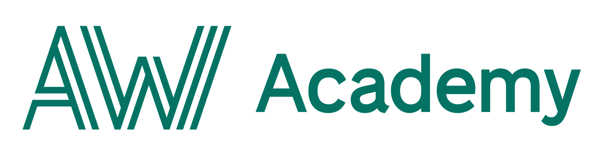

Härmed kallas samtliga DISK-medlemmar till Årsmöte med Val den 9 december 2020, kl 18.00. Nedan finnes föredragslistan i sin helhet. Handlingar kommer att publiceras senast den 2 december i kombination med länk för årsmötet, som i år kommer att ske digitalt via Zoom.
På DISKs årsmöten väljs kommande års styrelse in, därför är det väldigt viktigt att delta om man bryr sig om DISKs framtid! Alla medlemmar har närvarande-, yttrande-, och röstträtt.
Tills vidare, ta hand om dig!
Vänligast,
DISK-styrelsen 2020
Valberedningen är i full gång med att leta kandidater till nästa årets styrelse som ska väljas in nu i december, och i och med detta presenterar vi nu alla roller mer ingående. Är du intresserad av att sitta i DISKs styrelse? Maila oss!
Som en suppleant får man vara deltagande i mötena och erbjuda administrativt och operativt stöd till resten av styrelsen och avlasta de som har mycket att göra. Dessutom blir man en representant för DISK på alla interna och externa event!
Om man uppskattar vad DISK gör för DSVs studenter och vill vara delaktig i det, lära sig mer om DISK som organisation och spela en stöttande roll i arbetet (utan att ha för mycket ansvar), så är detta en perfekt post! Det är också en utmärkt inkörsport om du är intresserad av att kanske sitta ett år till.
Hejsan allihopa! Idag kom nya restriktioner från folkhälsomyndigheten (FHM) med anledningen av den ökade smittspridningen av Covid-19. Mer info här.
DISK har hittills tagit sitt ansvar genom att följa de restriktioner och rekommendationer som FHM kommit ut med trots att rekommendationerna inte alltid varit avsedda för våra typer av event och slutna sällskap. Med det i åtanke kan vi inte heller med gott samvete bortse från de nya restriktionerna och det nya skärpta läget.
De nya rekommendationerna uppmanar till att begränsa kontakt med människor utanför sitt hushåll. Att gå på våra event är såklart frivilligt, men det går inte att komma undan det faktum att många studenter reser kollektivt, och därmed kommer i kontakt med människor som inte har något annat val än att åka kollektivt.
Detta är en av många anledningar till att vi därför väljer att ställa in alla fysiska event och möten fram till 19e November.
Det tar emot för oss, eftersom vi vill finnas här för er studenter och kunna erbjuda både studentnytta och studiesociala aktiviteter. Men den ökade smittspridningen och våra medlemmars säkerhet är något som behöver tas på allvar. Vi hoppas självklart att vi alla kan ses igen snart och hoppas alla våra medlemmar tar hand om varandra. Givetvis kommer vårt arbete med studentnytta fortgå på distans i form av digitala event, DISK workshop och studiebevakning.
Om ni har några frågor får ni gärna kontakta vårt presidiepar via ordf@disk.su.se
Ta hand om er, DISK Ordförande & Vice ordförande Emilia Kaufeldt & Linnea Eriksson
Det slutgiltiga protokollet för styrelsemötet 15e oktober 2020 har nu laddats upp på hemsidan. Det färdigjusterade mötesprotokollet för styrelsemötet finner du i sin helhet här
Valberedningen är i full gång med att leta kandidater till nästa årets styrelse som ska väljas in nu i december, och i och med detta presenterar vi nu alla roller mer ingående. Är du intresserad av att sitta i DISKs styrelse? Maila oss!
Man stöttar Ordförande i dess roll och ser till att verksamheten sköts. Det är dessutom möten där man verkar för sammanhållning i studentsverige och studentstockholm. Eftersom man också är ytterst ansvarig för kåren ansvarar man för att regler och verksamhetsplanen följs och tar kåren i mål vid verksamhetsårets slut.
Om man gillar att engagera sig och vara med i kåren. Det är en otroligt bra erfarenhet som kräver god samarbetsförmåga och att man gillar studentfrågor. Vill du veta mer om rollen? kontakta gärna ordf@disk.su.se
Valberedningen är i full gång med att leta kandidater till nästa årets styrelse som ska väljas in nu i december, och i och med detta presenterar vi nu alla roller mer ingående. Är du intresserad av att sitta i DISKs styrelse? Maila oss!
Vad får man göra som Ordförande?Som Ordförande är du ytterst ansvarig för att verksamheten flyter på. Det inkluderar allt från att sammanställa verksamhetsplan och budget i början av året, till att hålla styrelsemöten och se till att din styrelse mår bra och har en balanserad arbetsbörda under verksamhetsårets gång.
För att man vill ha erfarenhet inom projekt- och arbetsledning. Dessutom får man ett brett kontaktnät inför arbetslivet och inom DISK. Det är dessutom väldigt roligt (!) eftersom man får umgås med väldigt många kompetenta och roliga människor.
Under terminen sker det massor med olika event, det kan vara spelkvällar, karaoke, företagsbesök,
pingisturnering, pub eller någonting helt annat.
Ta chansen och var med på allt kul!
Träffa representanter från accenture på onsdagspuben den 2:a decemeber.
Representanter från Innofactor hänger i Foo, kom och mingla!
Styrelsen kallar till årsmöte för samtliga
medlemmar.
Kårexpeditionen (aka KX) finns för dig som har frågor eller vill bli medlem i DISK. Här kan du också köpa diverse föremål, som DISK-band, tygpåsar, pennor, men också kompendium. Har du blivit av med ditt passerkort och behöver ett nytt, är det i kårexpeditionen du betalar för kortet. Kårexpeditionen har också en Lost&found-låda. Kårexpeditionen ligger bredvid Kaféterian och bemannas främst av vår kåradministratör men även delvis av DISKs styrelse.
För frågor som rör DISKs styrelse och ledning, kontakta de på styrelsen@disk.su.se
Är du som företag intresserad av kontakt med DISK eller har du näringslivsfrågor, ta kontakt med DISKs Näringslivssektion på nars@disk.su.se
Klubbmästeriet: kms@disk.su.se
Särimners Kultingar: sk@disk.su.se
Sporten: sporten@disk.su.se
MES: mes@disk.su.se
Insparken: insparken@disk.su.se